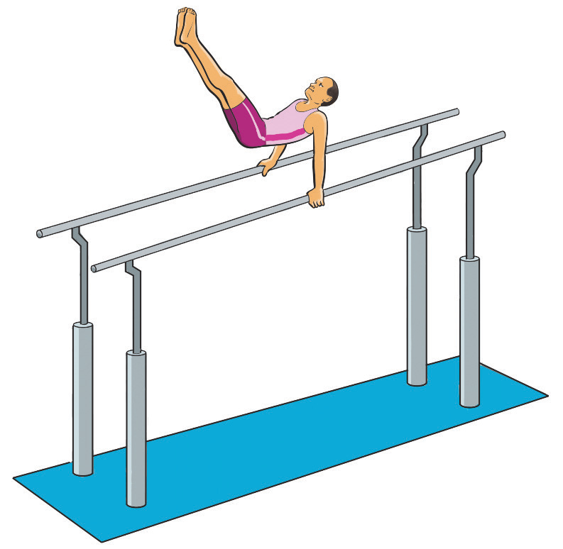

Parallel bars mounts
Mounting the parallel bars is the act of getting onto the apparatus to start a routine.
The following steps will help you practice mounting on parallel bars:
- (i)Jump and grab the bars with both hands;
- (ii)Swing your legs forward while pulling up;
- (iii)Land in a straight-arm support position and exit; Then:
- (iv)Place hands on the bars and jump up;
- (v)Lean forward while pushing into a handstand, Figure 4.20; and
- (vi)Hold the handstand briefly before transitioning into the routine.

Pommel horse mounts
Mounting the pommel horse is the way a gymnast gets onto the pommel horse to begin their routine.
The following steps will help you practice mounting on pommel horse: